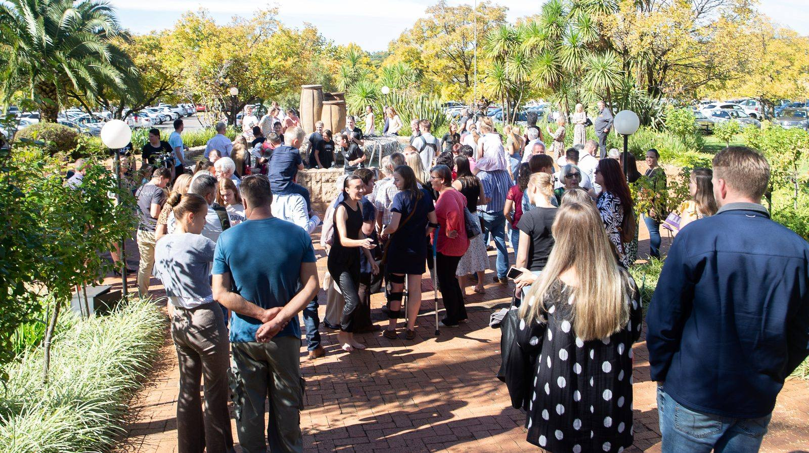

Wat glo ons?
Die Bybel as fondasie.
’n Droom dat ons mense kan ontwikkel wat die wêreld verander, ’n kerk bou wat ’n hele stad beïnvloed, ’n stad op ’n berg waarvan die lig nie weggesteek kan word nie.
Leerstellings
Veertien dokumente sit Collage se posisie op sleutelkwessies uiteen. ’n Greep daarvan; die res, insluitend ’n stuk oor selfmoord, lê op die amptelike webwerf.
-
01
Die Bybel
Wat Collage glo oor die Skrif se gesag en betroubaarheid.
-
02
Wie is Jesus?
Die kern van Collage se Christologie. Lees die dokument
-
03
Wat is ’n Christen?
Hoe Collage bekering en geloof verstaan.
-
04
Die Huwelik
Collage se posisie oor die huwelik.
-
05
Egskeiding en hertrou
’n Bybelse perspektief op egskeiding en hertrou.
-
06
Wat is waarheid?
Oor waarheid en gesag in ’n post-moderne wêreld.

Die span
- dr. Ernrich BassonSenior Leraar
- pastoor Jors JordaanKerkbestuurder
Saam met ’n span van meer as 25 mense oor vrouebediening, berading, studente- en jeugwerk, musiek, kinderbediening, sending, finansies, administrasie, klank en die koffiewinkel.